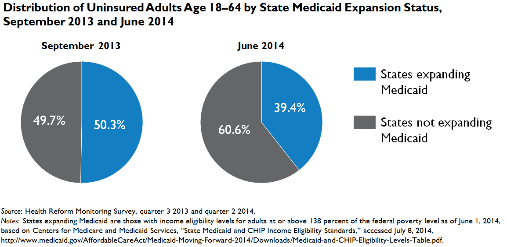

QuickTake: States Not Expanding Medicaid under the ACA Account for 60 Percent of the Nation's Uninsured in June 2014; Up from 50 Percent in September 2013
Genevieve M. Kenney, Adele Shartzer, Sharon K. Long, Stephen Zuckerman, Douglas Wissoker, Michael Karpman, and Nathaniel AndersonJuly 15, 2014
The Urban Institute's Health Reform Monitoring Survey (HRMS) has been tracking insurance coverage since the first quarter of 2013. This QuickTake reports on how the distribution of the nation’s uninsured changed through early June 2014 between Medicaid expansion and nonexpansion states, following the Affordable Care Act's (ACA) first open enrollment period.1 Under the ACA, new financial assistance for health insurance coverage is available through Medicaid and the new Marketplaces. As of June 2014, 25 states and the District of Columbia had expanded Medicaid to adults with incomes up to 138 percent of the federal poverty level.2 In states that expanded Medicaid, an estimated 71 percent of the uninsured likely qualify for some type of financial assistance for health insurance, compared with 44 percent of the uninsured in the states that did not expand Medicaid (Buettgens et al. 2014); consequently, greater reductions in uninsurance are anticipated in Medicaid expansion states. 
Consistent with expectations, HRMS data reported elsewhere show that states that implemented the ACA's Medicaid expansion saw larger declines in their uninsurance rates for adults between 2013 and June 2014 than did nonexpansion states (Long et al. 2014). Because of the differential declines in uninsured rates, we find that the uninsured are increasingly located in states that did not choose to expand Medicaid. Just before the beginning of open enrollment in September 2013, 49.7 percent of the nation’s uninsured were living in a state that did not expand Medicaid under the ACA; by June 2014, that figure had risen to 60.6 percent. To put that figure in context, 46.6 percent of the total US population resides in the states that did not expand Medicaid under the ACA.3 As Medicaid outreach continues under the ACA in the expansion states, the uninsured are likely to become even more concentrated in states that have opted to not expand Medicaid to their low-income residents.
Methods: Each round of the HRMS is weighted to be nationally representative. We present estimates from September 2013, just before the beginning of the first open enrollment period, and compare to estimates from June 2014. The estimates presented here are not regression adjusted to stabilize the sample composition over the period of analysis, because the goal is to measure how the composition of the uninsured has changed. Some portion of the difference in the estimate of the share of uninsured residing in Medicaid expansion states between September 2013 and June 2014 may be attributable to quarterly differences in the HRMS survey sample. However, the overall share of nonelderly adults living in nonexpansion states is similar across the two quarters (45.1 and 45.2 percent, respectively). We will provide a more detailed analysis of remaining uninsured adults in a policy brief to be released at the end of July, with other analyses to follow regularly.
References
Buettgens, Matthew, Genevieve M. Kenney, and Hannah Recht. 2014. “Eligibility for Assistance and Projected Changes in Coverage under the ACA: Variation Across States. May 2014 Update.” Washington DC: Urban Institute.
Long, Sharon K., Genevieve M. Kenney, Stephen Zuckerman, Douglas Wissoker, Adele Shartzer, Michael Karpman, and Nathaniel Anderson. 2014. “QuickTake: Number of Uninsured Adults Continues to Fall under the ACA: Down by 8.0 Million in June 2014.” Washington, DC: Urban Institute.
Notes 1Changes observed between the states that did and did not expand Medicaid should not be entirely attributed to that policy decision; there were other policy choices that likely affected enrollment. For example, many of the nonexpansion states did not set up their own Marketplaces and therefore did not get the same access to outreach and enrollment assistance funding. 2New Hampshire plans to begin enrolling adults under the ACA expansion in August of 2014. States were classified as expanding Medicaid if the income eligibility threshold for adults was 138 percent of the federal poverty level or higher as of April 1, 2014, based on data submitted to the Centers for Medicare and Medicaid Services by the states. See Centers for Medicare and Medicaid Services, "State Medicaid and CHIP Income Eligibility Standards," accessed July 8, 2014. 3Estimate based on the noninstitutionalized, civilian (not active duty military) population using state two-year averages from the Census Bureau's March 2012 and 2013 Current Population Surveys, Annual Social and Economic Supplements. |

 |
 |
 |